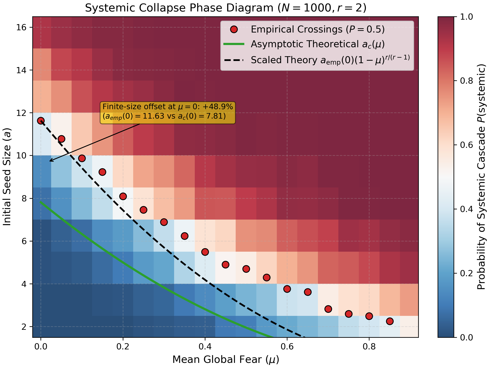
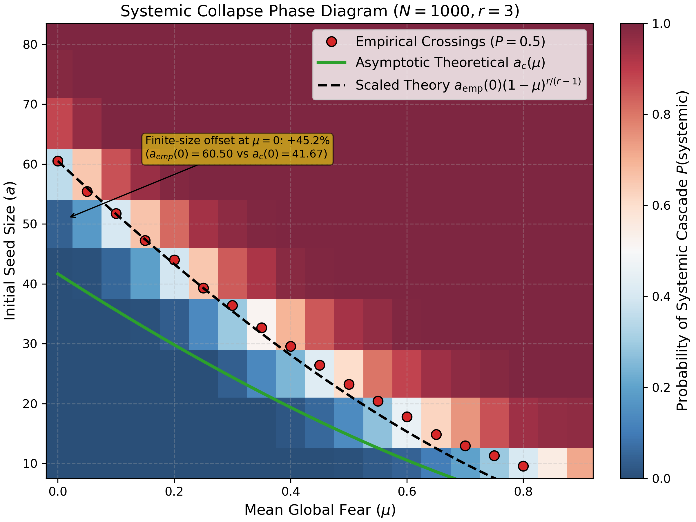
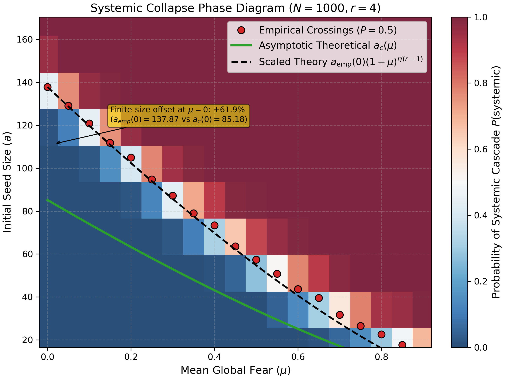
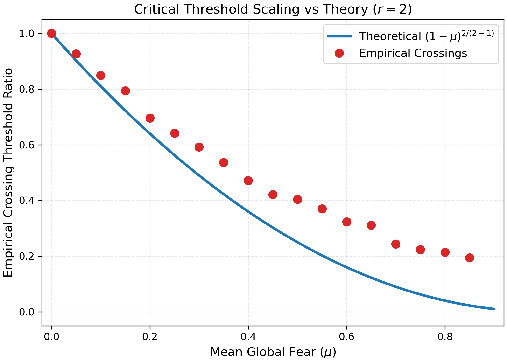
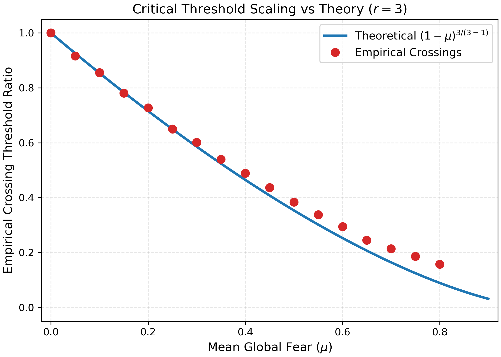
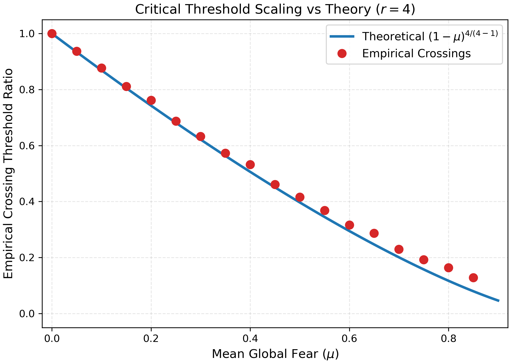

Simulation Evidence
results/figures/.
Each section header links back to the relevant conjecture in the main document.
C1 — Asymptotic Decoupling ↑ §4.1
The phase-diagram overlays below compare the empirical $P(\text{systemic})$ surface under the fear model at varying $\mu$ against the pure bootstrap-percolation ($\mu = 0$) boundary. Smooth, predictable deformation of the phase boundary with $\mu$ is the fingerprint of an asymptotically deterministic fear field — which is exactly what the decoupling conjecture predicts.



C2 — Critical Seed Scaling Law ↑ §4.4
The scaling validation plots show the empirical critical seed size $a_c(\mu)$ — the threshold seed at which $P(\text{systemic}) = 0.5$ — as a function of $\mu$, normalized by $a_c(0)$, for $n \in \{1000, 2000, 4000\}$. Each panel overlays the mean-field prediction $(1-\mu)^{r/(r-1)}$. The exponent values are $r/(r-1) = 2$ for $r=2$, $\tfrac{3}{2}$ for $r=3$, and $\tfrac{4}{3}$ for $r=4$.


